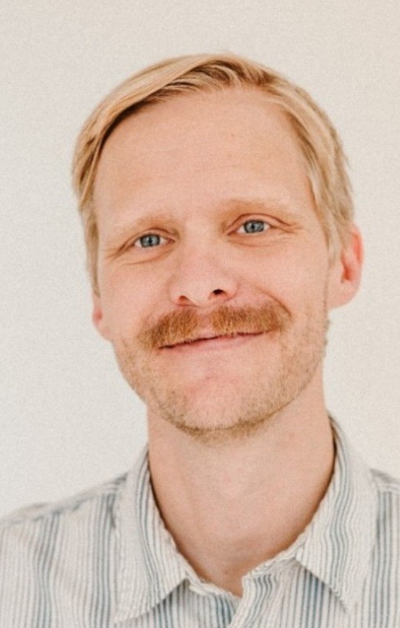

Josh Miller
Experience Designer

I’m an experience designer with a background in UI, code, and data. Lately my focus is agentic design practice: helping delivery teams build with AI agents, taking ideas from discovery through prototyping and into production-ready code. I’ve spent most of my life building and creating, from woodworking and carpentry to making music and, of course, software. I love my job.
When I’m not in front of a screen, I spend my time traveling, gardening, doing house projects, and hanging out in Chicago with my wife and kids. Drop me a line if you’d like to collaborate.